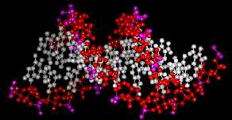
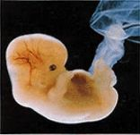
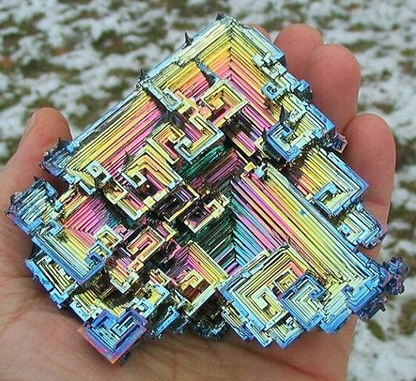
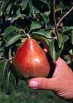
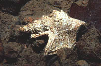
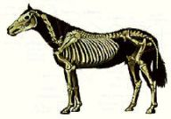
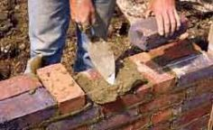
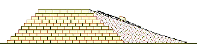
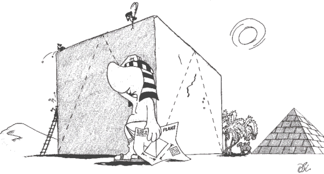

|
|
|
| Ana
Sayfa | Önceki Sayfa | Sonraki
Sayfa |
Giriþ:
Bilindiði gibi insanlar,
tarih boyunca, içinde yaþadýklarý doðadaki yaratýkar ve
kurulu mükemmel düzenden örnek alarak önemli keþiflerde
ve teknik ilerlemelerde bulunmuþlardýr. Mükemmel imalat
yeteneðine sahip olmayý hedefleyen otoinþa teknolojileri
de doðadaki mükemmel imalat örneklerinden esinlenilerek
geliþtirilmiþtir. Binlerce yýldýr kullanýlýp geliþtirilen
talaþlý imalat, kalýba dökme, þekillendirme vb. klasik
ve kýsýtlý imalat teknolojilerine kýyasla doðadaki imalat,
insanlarýn kullandýðý bu yöntemlerden çok farklý olarak
atom ve molekül seviyesindeki kontrollü birleþmelerle
olur. Bu konuda verilecek en uç örnek, þüphesiz doðadaki
en karmaþýk ve geliþmiþ yapýya sahip insan bedenidir. |
|

Ana rahminde yeni bir insan
vücudu inþa edilirken, ne bir talaþlý
imalat veya kalýba dökme yöntemi uygulanýr, ne bir
ek yeri mevcuttur, ne de perçin, vida, yapýþtýrma, vs.
gibi baðlama yöntemlerine ihtiyaç duyulur. Herþey atom,
molekül ve hücre bazýndaki hassas birleþmelerle gerçekleþir...
Eðer böyle bir imalat þekli var olmasaydý ne bu makale
yazýlmýþ olacaktý ne de siz bu yazýyý okuyor olabilecektiniz?..
"Coded Self-Assembly"
veya kodlanmýþ (DNA þifresiyle) kendinden imalat
denilebilecek bu hadiseler, imalat teknolojisinde insanlýðýn
önündeki bir ufuk çizgisidir. Bu olayý taklit ederek
imalat gerçekleþtirmek (self
assembly = kendinden imalat) þu anda henüz hayal
aþamasýnda olsa da bu ufuka doðru atýlmýþ ilk (pratik
uygulamasý olan) adým sayýlabilecek otoinþa teknolojilerinde
1990'dan bu yana önemli geliþmeler saðlanmýþtýr.
|
Otoinþa teknolojisi
için doðadan ve çevreden alýnan diðer örnekler:

Bizmut kristalleri |
| Mükemmel bir küre halini
alan sývý damlalarý (solda, su damlacýðý) ve düzgün küp þeklindeki
kristaller (saðda, tuz kristalleri), cansýzlar
dünyasýndan bu konuda verilebilecek ilk örneklerdendir. |
|
Bitkiler
dünyasýna girdiðimizde ise, bir aðacýn gövdesinin oluþumu,
hiç bir ek yerine sahip olmadan meyvalarýn içinde çekirdeklerinin
yerleþmesi örnek verilebilir.
Saðda görülen meyvanýn
içindeki her bir çekirdek, yine o meyvanýn aðacý, dallarý,
yapraklarý, meyvasý ve tohumlarý hakkýndaki molekül
bazýndaki tüm geometrik ve malzeme özelliklerine ait
bilgiyi içerir...
|
|

Hayvanlar dünyasýna baktýðýmýzda
ise karmaþýk þekilli bir deniz kabuðu, veya insanlarýn
uzun yýllar motorlu araçlar yerine kullandýðý atlarýn
tüm mekanik ve kimyasal yapýsýyla (klasik imalat yöntemleri
kullanýlmadan) oluþumu verilebilecek güzel örneklerdendir. |
|
 |
|
Tuðla ile inþa edilen bir duvar belki de arýlarýn petek inþa etmesine en yakýn örnektir. |
Günümüzdeki geliþmiþlik
seviyesiyle otoinþa teknolojisi henüz daha çok arýlarýn
balmumu kullanarak petek inþa etmesine benzemektedir.
Aslýnda ayný anda binlerce arýnýn deðiþik noktalardan
inþayý sürdürdüðü göz önüne alýnýrsa, buna tam benzer
bir otoinþa cihazýnýn, çok sayýda ve ana bilgisayarla
sürekli iletiþim halinde (nano teknoloji ile imal edilmiþ)
mini robotlar kullanýyor olmasý gerekirdi...
|
Aslýnda, belli hammadeleri
kullanarak katmanlar halinde bir yapý inþa etmek insanlýðýn
hiç de yabancý olmadýðý bir teknolojidir. Ýnþaat sýrasýnda
geçici olarak yapýyý (özellikle kemer, kubbe ve tavan
gibi) ayakta tutacak destek malzemeleri ve iskeleler kurulur.
Çok daha küçük yapýlarý imal etmede kullanýlan otoinþa
teknolojisinde de durum çok benzerdir, bu sayede binalar
gibi karmaþýk parçalar inþa edilebilir.


|
|
Ýnþa
yönteminin yontmaya nazaran avantajý burada gözükebilir.
Herhalde Tac Mahal'i kendi büyüklüðündeki bir kayayý
yontarak yapmayý deneselerdi ne kadar zor olurdu?
Otoinþa teknolojisi
sayesinde, önceden sadece büyük çaplý yapýlar için uygun
olan inþa metodu artýk avuç içine sýðabilecek parçalara
da uygulanabilir hale gelmiþtir.
|
| Ana
Sayfa | Önceki Sayfa | Sonraki
Sayfa | |
|